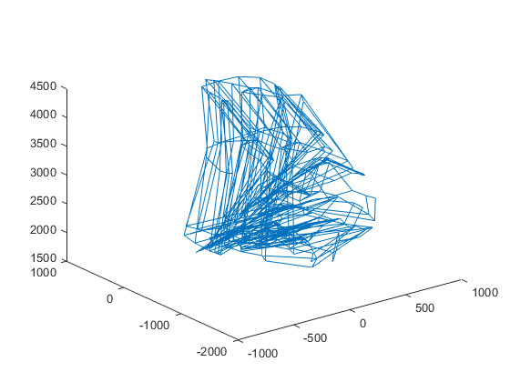
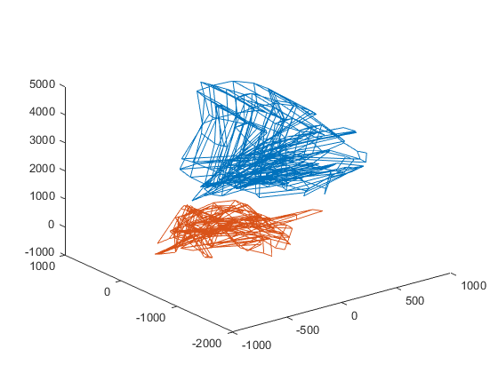
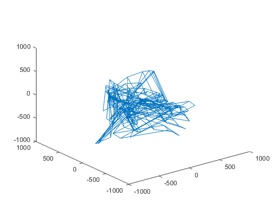

Normalize script
or how I came up of the random constants that use to multiple the data.
Contents
Average skeleton displacement as a mean of sorts
First one must notice that a skeleton in the dataset has always an initial displacement which we will neglect, as a translated action in space represents the same action.
We can see this from a random sample of skeletons from our data-set.
load_test_skel
[~, A] = skeldraw(a, false);
plot3(A(1,:),A(2,:), A(3,:))
%insert pic of several skeletons everywhere
ans =
struct with fields:
SLASH: '\\'
pathtodata: 'E:\fall_detection_datasets\TST Fall detection database ver. 2\'
wheretosavestuff: 'e:\\savesave'
homepath: 'C:\\Users\\Frederico\\Documents\\GitHub\\classifier'
 Based on Parisi's 2015 Paper, we chose the center of the hips to make our origin and subtracted that from all the data the sample output from the test function in conformskel shows us also the skeletons after they're centred:
bb.data = a(:,1); aa.data = a(:,2:end); [centralized_a, ~] = conformskel(aa, 'nohips'); [~, centralized_A] = skeldraw(centralized_a.data,false); hold on plot3(centralized_A(1,:),centralized_A(2,:), centralized_A(3,:)) hold off
Warning: no y? Warning: no y?
Or just the centralized skeletons:
plot3(centralized_A(1,:),centralized_A(2,:), centralized_A(3,:))
Now, since we want translation invariance, let's apply that to the data-set before we proceed any further with our inquiries.
load_skel_data % loads skeleton dataset [nohips_train, nohips_val] = conformskel(data_train, data_val,'nohips'); data = [nohips_val nohips_train]; allskels = makefatskel(data); % reshapes the skeletons in a more convenient 50x3xN array
Undefined function or variable 'load_skel_data'. Error in normalllll_publish_temp_delete_me (line 41) load_skel_data % loads skeleton dataset
Normalizing sizes
Even after normalizing for displacement, we can see from examining a point from our data-set that the array has some peculiarities. For example:
allskels(:,:,2)
We can clearly see from the output that the first 24 lines have numbers that are much bigger then the second 25:end part. To correct this unwanted abnormality - and since the units don't carry any other importance here, but they are an integral part of the GWR algorithm (the activations depends on the exponential of the distance) - we will multiply them by suitable constants. In order to find out what these constants are, we will use the avarage standard deviation from these, as a measure.
vectdata_pos = reshape(allskels(1:24,:,:),1,[]); pos_std = std(vectdata_pos)
For the skeletons.
vectdata_vel = reshape(allskels(25:end,:,:),1,[]); vel_std = std(vectdata_vel)
And for the velocities.
Another approach that seemed reasonable was to write it as:
mean_pos_std = mean(mean(std(allskels(1:24,:,:))))
For the skeletons.
mean_vel_std = mean(mean(std(allskels(25:end,:,:))))
And for the velocities.
But we notice that their ratio has around the same order of magnitude:
pos_std/vel_std mean_pos_std/mean_vel_std
So since they are multiplication factors, these will likely not make too much of a difference. There are likely to be other more sensible approaxes here, but our intention is only having some similarity, which we still don't have. They algorithm performs somehow even with these very big differences, so we suppose that for our needs this measure will suffice. The output of these functions were used to construct the 'normal' function, that is, pos_std was used to normalize the skeleton data (lines 1:24) and vel_std to normalize the velocities (lines 25:49).
Results after normalizing the dataset:
[normal_train, normal_val] = conformskel(data_train, data_val,'nohips','normal'); nodata = normal_train;%[normal_train, normal_val];
Now we want to verify if our procedures were effective in removing this:
noallskels = makefatskel(nodata); noallskels(:,:,2)
And also our measures:
vectdata_pos = reshape(noallskels(1:24,:,:),1,[]); pos_std = std(vectdata_pos) vectdata_vel = reshape(noallskels(25:end,:,:),1,[]); vel_std = std(vectdata_vel)
mean_pos_std = mean(mean(std(noallskels(1:24,:,:)))) mean_vel_std = mean(mean(std(noallskels(25:end,:,:))))
And what happened to their ratios:
pos_std/vel_std mean_pos_std/mean_vel_std
Perhaps it is more interesting to see what happened to the data with a plot. This can be easily done with the skeldraw function. But instead of doing it on the whole dataset, let's just do it on our small test set:
[normalized_a, ~] = conformskel(a, b , 'nohips', 'normal'); normalized_A = skeldraw(normalized_a,false); plot3(normalized_A(1,:),normalized_A(2,:), normalized_A(3,:))